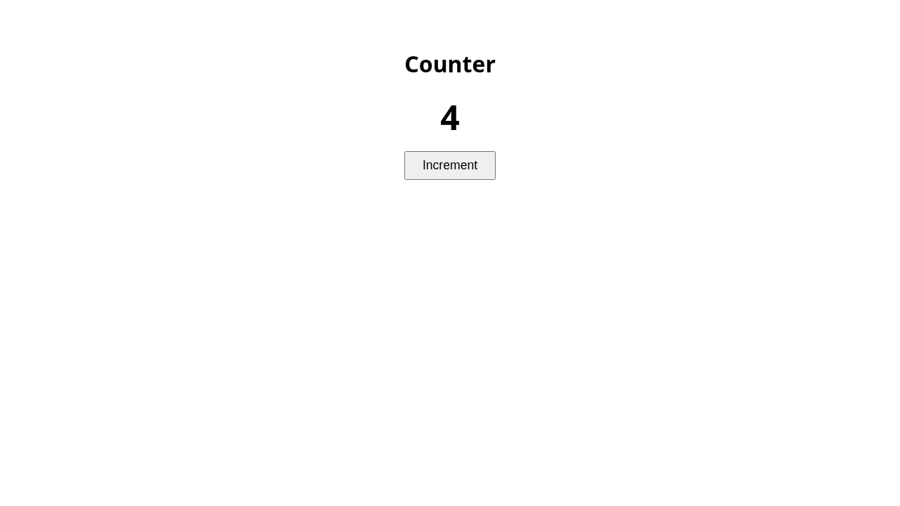
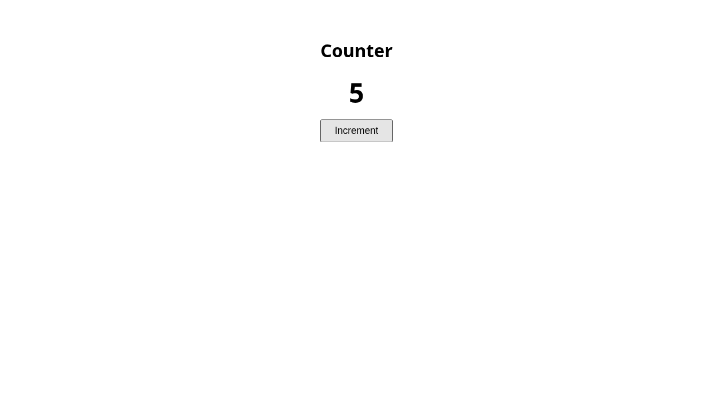
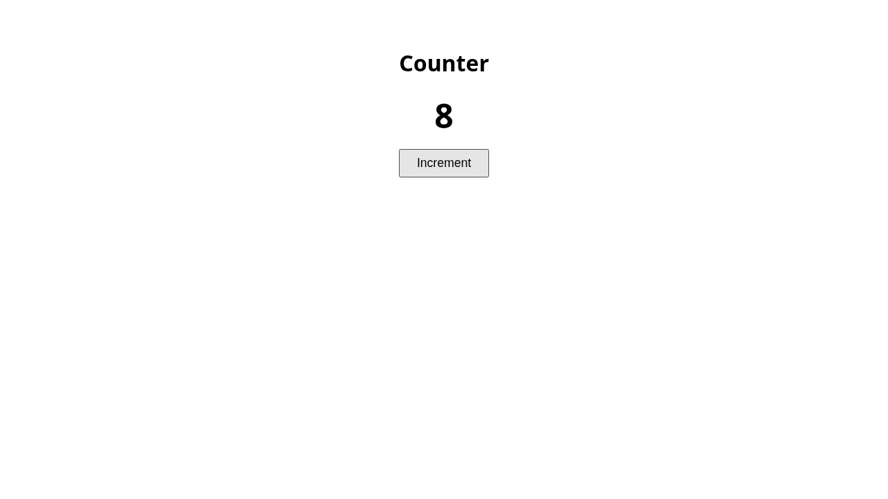
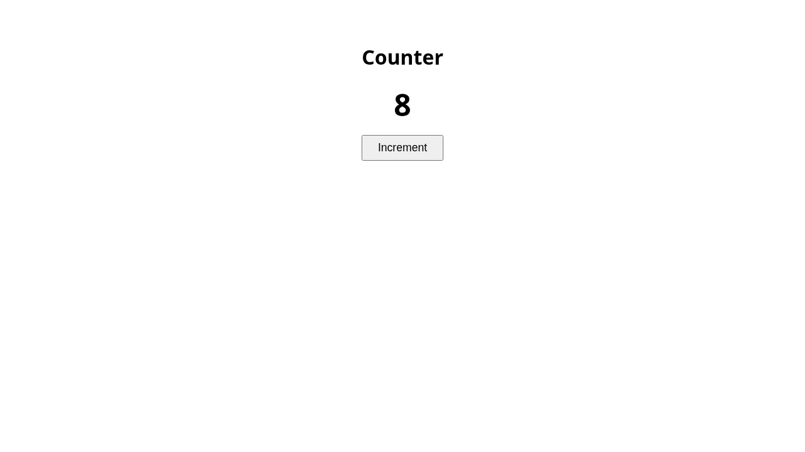
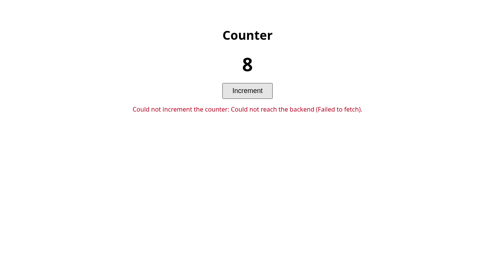
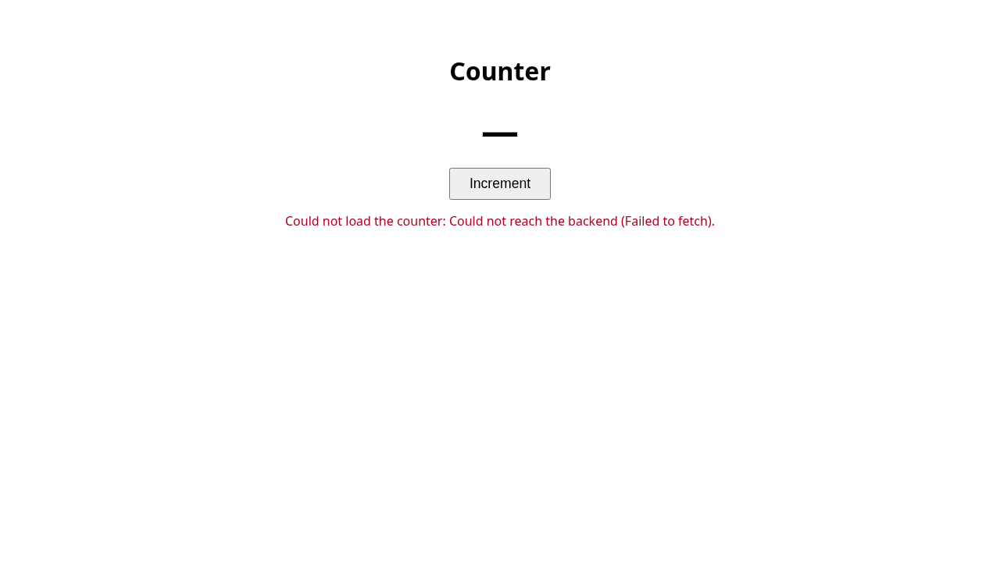

Trial timeline
Cost by milestone
Table view
| Milestone | Cost |
|---|---|
| backend-dev · Planning | $0.14 |
| backend-dev · M01 | $0.33 |
| frontend-dev · Planning | $0.17 |
| frontend-dev · M01 | $0.86 |
Cost by step
Table view
| Step | Cost |
|---|---|
| validate-ui | $0.48 |
| fix | $0.38 |
| plan | $0.31 |
| implement | $0.22 |
| author-checks | $0.11 |
backend-dev Completed
progress.md · plan summary · final report · OpenAPI document
Stack
Proposed: Node.js (>=18) using only the built-in http module, no third-party dependencies, with in-memory state. The target directory is empty and neither the requirements nor the configuration name a stack; a zero-dependency Node server is the simplest common choice for two JSON endpoints and needs no install step.
Source: proposed
Runtime
- start_command
node server.js- cwd
.- base_url
http://127.0.0.1:3000- ready_url
http://127.0.0.1:3000/counter- openapi_path
openapi.json- unit_test_command
node --test
Target: /tmp/claude-1000/-data-space-workspace-claude-loops/19246cf3-3402-4e12-8fb8-9e1c0e715583/scratchpad/t076/smoke-alt/backend
Milestones
M01 Counter API Achieved
Serve GET /counter and POST /counter/increment backed by an in-memory counter, and document both in openapi.json.
Tasks
- ✓ M01-T01 HTTP server skeleton COUNTER-1Create server.js using Node's built-in http module, listening on PORT env var (default 3000). Unknown routes return 404 with a JSON error body; wrong methods on known paths return 405. Add CORS headers (Access-Control-Allow-Origin: *) and answer OPTIONS preflight with 204 so a separately served page can call the API.
- ✓ M01-T02 GET /counter COUNTER-1Return 200 with Content-Type application/json and body {"value": n}, where n is the current in-memory counter value, starting at 0 when the server starts.
- ✓ M01-T03 POST /counter/increment COUNTER-1Increment the in-memory counter by one and return 200 with Content-Type application/json and body {"value": n} holding the new value. No request body is required.
- ✓ M01-T04 OpenAPI document and unit tests COUNTER-1Write openapi.json (OpenAPI 3.0) documenting only GET /counter and POST /counter/increment with the {value: integer} response schema. Add node:test unit tests that start the server on an ephemeral port and exercise both endpoints.
Acceptance criteria (trial 1 validation)
| Criterion | Result | Observed | Evidence |
|---|---|---|---|
| M01-AC1 On a freshly started server, GET /counter returns 200 with a JSON body exactly {"value": 0}. | Passed | C1 passed | C1.body C1.headers |
| M01-AC2 POST /counter/increment returns 200 with JSON body {"value": n+1}, where n is the value GET /counter returned immediately before. | Passed | C3 passed; C11 passed | C3.body C3.headers C11.body C11.headers |
| M01-AC3 After three consecutive POST /counter/increment calls on a fresh server, the responses are {"value": 1}, {"value": 2}, {"value": 3} and a following GET /counter returns 200 with {"value": 3}. | Passed | C3 passed; C4 passed; C5 passed; C6 passed | C3.body C3.headers C4.body C4.headers C5.body C5.headers C6.body C6.headers |
| M01-AC4 GET /counter does not change the value: two consecutive GET /counter calls return the same {"value": n}. | Passed | C1 passed; C2 passed; C6 passed; C7 passed | C1.body C1.headers C2.body C2.headers C6.body C6.headers C7.body C7.headers |
| M01-AC5 GET /counter/increment returns 405 and GET /does-not-exist returns 404, and neither changes the value reported by GET /counter. | Passed | C8 passed; C9 passed; C10 passed | C8.body C8.headers C9.body C9.headers C10.body C10.headers |
HTTP checks
| Check | Result | Command | Status |
|---|---|---|---|
| C1 | Passed | curl -sS --max-time 30 -X GET http://127.0.0.1:3000/counter | 200 |
| C2 | Passed | curl -sS --max-time 30 -X GET http://127.0.0.1:3000/counter | 200 |
| C3 | Passed | curl -sS --max-time 30 -X POST http://127.0.0.1:3000/counter/increment | 200 |
| C4 | Passed | curl -sS --max-time 30 -X POST http://127.0.0.1:3000/counter/increment | 200 |
| C5 | Passed | curl -sS --max-time 30 -X POST http://127.0.0.1:3000/counter/increment | 200 |
| C6 | Passed | curl -sS --max-time 30 -X GET http://127.0.0.1:3000/counter | 200 |
| C7 | Passed | curl -sS --max-time 30 -X GET http://127.0.0.1:3000/counter | 200 |
| C8 | Passed | curl -sS --max-time 30 -X GET http://127.0.0.1:3000/counter/increment | 405 |
| C9 | Passed | curl -sS --max-time 30 -X GET http://127.0.0.1:3000/does-not-exist | 404 |
| C10 | Passed | curl -sS --max-time 30 -X GET http://127.0.0.1:3000/counter | 200 |
| C11 | Passed | curl -sS --max-time 30 -X POST http://127.0.0.1:3000/counter/increment | 200 |
API contract: Passed
Trials
| # | Kind | Result | Detail | Duration | Cost | Sessions |
|---|---|---|---|---|---|---|
| 1 | implement | Passed | 55s | $0.33 | f837c03e 5e851391 |
frontend-dev Completed
progress.md · plan summary · final report · UI: http://127.0.0.1:8080/
Stack
Proposed: the target directory is empty and neither the requirements nor the configuration name a frontend stack. Use a static page (HTML, CSS, vanilla ES-module JavaScript) served by a small Node.js server that uses only built-in modules (node:http, node:fs), with tests run by node:test. It needs no dependencies or build step and matches the Node backend. The server also serves /config.js, which sets the backend base URL from the BACKEND_BASE_URL environment variable at run time. The browser calls the backend directly, which works because the backend sends Access-Control-Allow-Origin: *.
Source: proposed
Runtime
- install_command
true- start_command
node server.js- cwd
.- base_url
http://127.0.0.1:8080/- ready_url
http://127.0.0.1:8080/- unit_test_command
node --test
Target: /tmp/claude-1000/-data-space-workspace-claude-loops/19246cf3-3402-4e12-8fb8-9e1c0e715583/scratchpad/t076/smoke-alt/frontend
Milestones
M01 Counter page Achieved
Serve one page that shows the current counter value from GET /counter and has a button that calls POST /counter/increment and shows the returned value.
Tasks
- ✓ M01-T01 Static server with runtime config COUNTER-1Create package.json (type: module, with start and test scripts) and server.js. server.js uses node:http to serve index.html, app.js, api.js and styles.css from the target directory on PORT (default 8080) and host 127.0.0.1. It also serves /config.js, which sets window.APP_CONFIG = { backendBaseUrl } from the BACKEND_BASE_URL environment variable (default http://127.0.0.1:3000, the backend_base_url given in configuration). Unknown paths return 404.
- ✓ M01-T02 API client limited to the spec's operations COUNTER-1api.js exports getCounter(), which sends GET {base}/counter, and incrementCounter(), which sends POST {base}/counter/increment with no body. Each one parses the JSON response and returns its integer value. A non-2xx response or a network failure throws an error. No other endpoints are called.
- ✓ M01-T03 Counter UI COUNTER-1index.html has a heading 'Counter', a value display element (id="counter-value", aria-live="polite"), an 'Increment' button (id="increment-button") and an error area (id="error", role="alert"). On load, app.js calls getCounter and shows the value; until then the display shows 'Loading…'. When the button is clicked, app.js disables the button, calls incrementCounter, shows the returned value, then enables the button again. If a request fails, the error area shows a readable message and the last value stays on screen.
- ✓ M01-T04 Unit tests COUNTER-1Add node:test tests. They check that api.js calls the correct method and URL and parses {value}, using a stubbed global fetch, and that server.js serves index.html and a config.js that reflects BACKEND_BASE_URL.
Acceptance criteria (trial 2 validation)
| Criterion | Result | Observed | Evidence |
|---|---|---|---|
| M01-AC1 Opening the base URL shows a page with a 'Counter' heading, an 'Increment' button, and a number that equals the value GET /counter returns (for example 0 on a freshly started backend). | Passed | The page shows an h1 heading 'Counter', a paragraph with the number '0' and a button 'Increment'. The GET /counter response body was {"value":0}. In the second pass (backend at 4), the page showed '4', matching GET /counter. Note: my first round of screenshots used relative filenames and were saved outside evidence/, probably in the Playwright working directory (the frontend scratchpad). I retook all evidence into evidence/. |  |
| M01-AC2 Clicking 'Increment' once sends exactly one POST /counter/increment to the backend, and the number on the page goes up by one to match the value in the response. | Passed | One click produced exactly one POST http://127.0.0.1:3000/counter/increment (200) with body {"value":1}. The number changed from 0 to 1. In the second pass it went from 4 to 5, with response {"value":5}, and exactly one POST was sent. |  |
| M01-AC3 Clicking 'Increment' three times makes the number go up by three. Reloading the page then shows the same number, fetched again with GET /counter. | Passed | The number went 5 → 6 → 7 → 8 (up by 3), each value matching its POST response. After the reload, a new GET http://127.0.0.1:3000/counter returned {"value":8} and the page showed 8. The first pass behaved the same way: 1 → 4, then 4 after reload. |   |
| M01-AC4 Every network request the page makes to the backend is either GET /counter or POST /counter/increment on the configured backend base URL. No other backend endpoint is requested. | Passed | Every backend request was GET http://127.0.0.1:3000/counter or POST http://127.0.0.1:3000/counter/increment. All other requests were static assets from the frontend origin 127.0.0.1:8080 (/, styles.css, config.js, app.js, api.js). No other backend endpoint was requested. | |
| M01-AC5 If the backend is unreachable when the page loads or when 'Increment' is clicked, the page shows a visible error message instead of failing silently. | Passed | When Increment was clicked, the page kept '8' and showed a visible message: 'Could not increment the counter: Could not reach the backend (Failed to fetch).' When the page loaded, the number showed '—' and a visible message: 'Could not load the counter: Could not reach the backend (Failed to fetch).' I simulated the unreachable backend by aborting its requests in the browser; the real backend process was not stopped. |   |


Network requests seen by the browser
| Method | URL | Status |
|---|---|---|
| GET | http://127.0.0.1:8080/ | 200 |
| GET | http://127.0.0.1:8080/styles.css | 200 |
| GET | http://127.0.0.1:8080/config.js | 200 |
| GET | http://127.0.0.1:8080/app.js | 200 |
| GET | http://127.0.0.1:8080/api.js | 200 |
| GET | http://127.0.0.1:3000/counter | 200 |
| POST | http://127.0.0.1:3000/counter/increment | 200 |
| POST | http://127.0.0.1:3000/counter/increment | 200 |
| POST | http://127.0.0.1:3000/counter/increment | 200 |
| POST | http://127.0.0.1:3000/counter/increment | 200 |
| GET | http://127.0.0.1:8080/ | 200 |
| GET | http://127.0.0.1:8080/styles.css | 200 |
| GET | http://127.0.0.1:8080/config.js | 200 |
| GET | http://127.0.0.1:8080/app.js | 200 |
| GET | http://127.0.0.1:8080/api.js | 200 |
| GET | http://127.0.0.1:3000/counter | 200 |
| POST | http://127.0.0.1:3000/counter/increment | |
| GET | http://127.0.0.1:8080/ | 200 |
| GET | http://127.0.0.1:8080/styles.css | 200 |
| GET | http://127.0.0.1:8080/config.js | 200 |
| GET | http://127.0.0.1:8080/app.js | 200 |
| GET | http://127.0.0.1:8080/api.js | 200 |
| GET | http://127.0.0.1:3000/counter | |
| GET | http://127.0.0.1:8080/ | 200 |
| GET | http://127.0.0.1:8080/styles.css | 200 |
| GET | http://127.0.0.1:8080/config.js | 200 |
| GET | http://127.0.0.1:8080/app.js | 200 |
| GET | http://127.0.0.1:8080/api.js | 200 |
| GET | http://127.0.0.1:3000/counter | 200 |
| POST | http://127.0.0.1:3000/counter/increment | 200 |
| POST | http://127.0.0.1:3000/counter/increment | 200 |
| POST | http://127.0.0.1:3000/counter/increment | 200 |
| POST | http://127.0.0.1:3000/counter/increment | 200 |
| GET | http://127.0.0.1:8080/ | 200 |
| GET | http://127.0.0.1:8080/styles.css | 200 |
| GET | http://127.0.0.1:8080/config.js | 200 |
| GET | http://127.0.0.1:8080/app.js | 200 |
| GET | http://127.0.0.1:8080/api.js | 200 |
| GET | http://127.0.0.1:3000/counter | 200 |
| POST | http://127.0.0.1:3000/counter/increment | |
| GET | http://127.0.0.1:8080/ | 200 |
| GET | http://127.0.0.1:8080/styles.css | 200 |
| GET | http://127.0.0.1:8080/config.js | 200 |
| GET | http://127.0.0.1:8080/app.js | 200 |
| GET | http://127.0.0.1:8080/api.js | 200 |
| GET | http://127.0.0.1:3000/counter |
API contract: Passed
Trials
| # | Kind | Result | Detail | Duration | Cost | Sessions |
|---|---|---|---|---|---|---|
| 1 | implement | Failed | interrupted: the driver stopped before the trial finished (interrupted or killed) | 1m 51s | $0.00 | |
| 2 | fix | Passed | 3m 16s | $0.86 | 5d44d21f 24a26b15 |
Questions, assumptions, and retries
Open questions
| Loop | ID | Question | Answer |
|---|---|---|---|
| backend-dev | OQ1 | Should the backend also serve the page with the increment button (e.g. GET / returning HTML), or is the page built by a separate frontend in the sibling workspace directory? | A separate frontend loop builds the page; the backend serves only the counter API (keep CORS enabled). |
Planning assumptions
| Loop | ID | Assumption | Source |
|---|---|---|---|
| backend-dev | A1 | POST /counter/increment returns the new value in the same shape as GET /counter: {"value": <n>}, with status 200. | COUNTER-1 says it 'returns the new value' without a shape; reusing the GET shape is the consistent reading. |
| backend-dev | A2 | The counter starts at 0 and is held in memory; it resets when the server restarts. No persistence is required. | COUNTER-1 names no initial value or persistence. |
| backend-dev | A3 | The page with the button is out of scope for this backend loop (pending OQ1); the backend enables permissive CORS so a separate frontend can call it. | Target directory is 'backend'; COUNTER-1 page requirement. |
| backend-dev | A4 | The server listens on port 3000 by default (overridable via the PORT environment variable) and binds to all interfaces. | Proposed; no port given in requirements or configuration. |
| backend-dev | A5 | The counter is a single global counter with no authentication. | COUNTER-1 describes one counter and mentions no users or auth. |
| frontend-dev | A1 | The frontend is served on 127.0.0.1:8080; the PORT environment variable overrides the port. | proposed; the configuration does not specify a frontend port |
| frontend-dev | A2 | The backend base URL is read at run time from the BACKEND_BASE_URL environment variable. If it is not set, the default is http://127.0.0.1:3000, the backend_base_url given in the context. | context.frontend.backend_base_url |
| frontend-dev | A3 | The browser calls the backend cross-origin with no proxy. The backend's server.js sends Access-Control-Allow-Origin: * and answers OPTIONS preflights. | existing backend code (backend/server.js) |
| frontend-dev | A4 | The page loads the current value with GET /counter when it opens, and after each click shows the value returned by POST /counter/increment. It does not call GET /counter again after incrementing. | COUNTER-1 and the openapi.json response schemas |
| frontend-dev | A5 | Showing an error message when a request fails, and disabling the button while a request is in flight, are basic UX. They do not add new requirements. | proposed |
Claude sessions and events
All 6 Claude call(s)
| Loop | Step | Milestone | Trial | Session | Prompt | Tokens | Cost | Duration | Failure |
|---|---|---|---|---|---|---|---|---|---|
| backend-dev | plan | planning | 1 | 23002263-d34e-401c-9d39-36ffb3a34db6 | prompt | 46.0k | $0.14 | 26s | |
| backend-dev | author-checks | M01 | 1 | f837c03e-9b0c-4c3c-a903-24dea9d0f96c | prompt | 22.8k | $0.11 | 13s | |
| backend-dev | implement | M01 | 1 | 5e851391-7eb8-427e-aa35-2d66bbd784c2 | prompt | 135.8k | $0.22 | 35s | |
| frontend-dev | plan | planning | 1 | 2f5a3381-a752-4fbe-b861-d89b39cf9c20 | prompt | 72.5k | $0.17 | 29s | |
| frontend-dev | fix | M01 | 2 | 5d44d21f-2156-4521-bf18-9a4a5630ec1a | prompt | 287.6k | $0.38 | 1m 22s | |
| frontend-dev | validate-ui | M01 | 2 | 24a26b15-2a65-42e5-a094-a3b130f01783 | prompt | 672.8k | $0.48 | 1m 44s |
Event log (34 events)
| Time | Loop | Type | Milestone | Message |
|---|---|---|---|---|
| 2026-09-27T13:57:31.374Z | backend-dev | run-started | first run | |
| 2026-09-27T13:57:31.860Z | backend-dev | input-check | requirements /data/space/workspace/claude-loops/loops/shared/tests/fixtures/smoke-alt/requirements.md (sha256 9ad939363c4a9bdd47287729e3d45ffbf715f2f12b4be789bc46c8e37df2c702, mode prd), target /tmp/claude-1000/-data-space-workspace-claude-loops/19246cf3-3402-4e12-8fb8-9e1c0e715583/scratchpad/t076/smoke-alt/backend | |
| 2026-09-27T13:57:32.744Z | backend-dev | trial-started | planning trial 1 (plan) | |
| 2026-09-27T13:58:02.500Z | backend-dev | plan-stored | 1 milestone(s), 1 open question(s) | |
| 2026-09-27T13:58:02.553Z | backend-dev | paused | awaiting approval | |
| 2026-09-27T13:58:12.410Z | backend-dev | approved | plan approved with the answers in outputs/open-questions.md | |
| 2026-09-27T13:58:13.414Z | backend-dev | run-started | resumed in status implementing | |
| 2026-09-27T13:58:14.048Z | backend-dev | trial-started | M01 | trial 1 (implement) |
| 2026-09-27T13:59:07.575Z | backend-dev | task-implemented | M01 | M01-T01: server.js uses node:http, listens on PORT (default 3000); unknown paths -> 404 JSON, wrong method on known path -> 405 JSON with Allow header; CORS Access-Control-Allow-Origin: * on all responses; OPTIONS on known paths -> 204. |
| 2026-09-27T13:59:07.641Z | backend-dev | task-implemented | M01 | M01-T02: GET /counter returns 200 application/json {"value": n}, starting at 0. |
| 2026-09-27T13:59:07.694Z | backend-dev | task-implemented | M01 | M01-T03: POST /counter/increment increments by one and returns 200 {"value": n}; request body ignored. |
| 2026-09-27T13:59:07.762Z | backend-dev | task-implemented | M01 | M01-T04: openapi.json (OpenAPI 3.0.3) documents only the two endpoints; test/server.test.js covers all acceptance criteria on an ephemeral port. `node --test` passes 5/5. |
| 2026-09-27T13:59:09.710Z | backend-dev | validation-passed | M01 | trial 1 passed |
| 2026-09-27T13:59:09.784Z | backend-dev | milestone-achieved | M01 | M01 Counter API |
| 2026-09-27T13:59:10.897Z | backend-dev | completed | all 1 milestone(s) achieved | |
| 2026-09-27T13:59:21.397Z | frontend-dev | run-started | first run | |
| 2026-09-27T13:59:21.908Z | frontend-dev | input-check | requirements /data/space/workspace/claude-loops/loops/shared/tests/fixtures/smoke-alt/requirements.md (sha256 9ad939363c4a9bdd47287729e3d45ffbf715f2f12b4be789bc46c8e37df2c702, mode prd), API spec /data/space/workspace/claude-loops/workspaces/smoke-alt/backend-dev/outputs/openapi.json (sha256 351ad96d1349553fd4d0f1e60750770c100eb1349dc534dadd5a43f452915c90), target /tmp/claude-1000/-data-space-workspace-claude-loops/19246cf3-3402-4e12-8fb8-9e1c0e715583/scratchpad/t076/smoke-alt/frontend | |
| 2026-09-27T13:59:22.430Z | frontend-dev | trial-started | planning trial 1 (plan) | |
| 2026-09-27T13:59:55.459Z | frontend-dev | plan-stored | 1 milestone(s), 0 open question(s) | |
| 2026-09-27T13:59:55.513Z | frontend-dev | paused | awaiting approval | |
| 2026-09-27T14:00:04.784Z | frontend-dev | approved | plan approved with the answers in outputs/open-questions.md | |
| 2026-09-27T14:00:05.911Z | frontend-dev | run-started | resumed in status implementing | |
| 2026-09-27T14:00:06.642Z | frontend-dev | trial-started | M01 | trial 1 (implement) |
| 2026-09-27T14:01:56.701Z | frontend-dev | lock-cleared | stale lock of pid 100395 on sherly (started 2026-09-27T14:00:05.789Z) removed by --force-unlock | |
| 2026-09-27T14:01:57.029Z | frontend-dev | validation-failed | M01 | trial 1 failed: interrupted: the driver stopped before the trial finished (interrupted or killed) |
| 2026-09-27T14:01:57.083Z | frontend-dev | run-started | resumed in status implementing | |
| 2026-09-27T14:01:57.672Z | frontend-dev | trial-started | M01 | trial 2 (fix) |
| 2026-09-27T14:03:22.364Z | frontend-dev | task-implemented | M01 | M01-T01: The previous trial was interrupted and left the target empty, so this trial built everything. It adds package.json (type: module, start and test scripts) and server.js, which uses node:http on 127.0.0.1:PORT (default 8080) and serves index.html at / and /index.html, plus app.js, api.js and styles.css. /config.js sets window.APP_CONFIG = { backendBaseUrl } from BACKEND_BASE_URL (default http://127.0.0.1:3000). Unknown paths return 404. I started it and fetched each file: 200 for known files, 404 for an unknown path. |
| 2026-09-27T14:03:22.417Z | frontend-dev | task-implemented | M01 | M01-T02: api.js exports getCounter() (GET {base}/counter) and incrementCounter() (POST {base}/counter/increment, no body). Each parses {value} and checks that it is an integer. A non-2xx response, a network failure or an invalid body throws an Error with a readable message. Only these two operations are called. The only header sent is Accept, which is CORS-safelisted, so there is no preflight. |
| 2026-09-27T14:03:22.473Z | frontend-dev | task-implemented | M01 | M01-T03: index.html has the 'Counter' heading, #counter-value (aria-live=polite, starts as 'Loading…'), the 'Increment' button (#increment-button) and #error (role=alert, hidden until an error). app.js loads the value on start. On click it disables the button, shows the value POST returns, and enables the button again in finally. On failure it shows a message in #error and keeps the last value; if the first load fails, the display shows '—'. An inline data: favicon stops a stray /favicon.ico request. |
| 2026-09-27T14:03:22.527Z | frontend-dev | task-implemented | M01 | M01-T04: test/api.test.js stubs global fetch and checks the method, URL, missing body, value parsing, and errors for non-2xx and network failures. test/server.test.js checks that / serves index.html, that config.js reflects BACKEND_BASE_URL and its default, and that unknown paths return 404. `node --test`: 8 passed, 0 failed. |
| 2026-09-27T14:05:14.019Z | frontend-dev | validation-passed | M01 | trial 2 passed |
| 2026-09-27T14:05:14.075Z | frontend-dev | milestone-achieved | M01 | M01 Counter page |
| 2026-09-27T14:05:14.438Z | frontend-dev | completed | all 1 milestone(s) achieved |